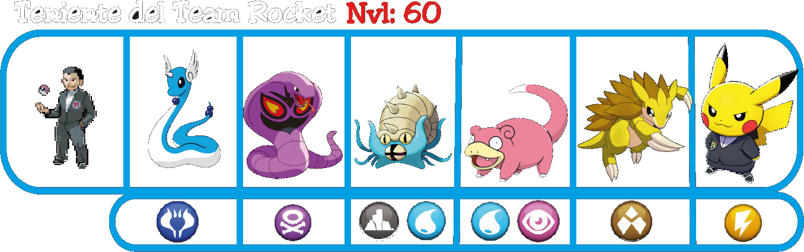

Guarida Rocket
En cuanto bajes las escaleras, te estará esperando la primera enemiga, derrótala para seguir avanzando.
Después de derrotarla si subes encontrarás la sala del Teniente, pero está bloqueada por un panel con contraseña, deberás investigar hasta dar con la clave.
Dirígete hacia el Noreste y entra al laboratorio, habla con los científicos y revisa el diario que encontrarás en la habitación.

El diario se encuentra encima de la pequeña jaula entre las máquinas.
En el diario no encontrarás la contraseña, aunque podrás leer entradas antiguas de los miembros del laboratorio. Después de leerlo, te darás cuenta de que en la sala ya no están los científicos, solo tú y alguien con un traje protector. Un gas sale de la ventilación y te dejan dormido junto a tus compañeros.
La habitación llenándose de gas.
Despertarás unas horas más tarde en lo que parece una celda de la cárcel, a través de los barrotes puedes ver que tu compañero ha vuelto a su etapa Rookie, siendo Agumon o BlackAgumon, dependiendo de si anteriormente le hiciste tomar su forma oscura..
Cárcel Rocket
Para avanzar, tendrás que explorar ciertos puntos de la celda, estos son la parte inferior de la cama, el retrete y la puerta de la celda. Una vez que hayas revisado todo, tu compañero despertará y tendréis una pequeña conversación, que será interrumpida por una extraña visita.
Sin decir nada ni revelar su identidad, lanzará un destornillador dentro de tu celda y se irá de nuevo.
Con el destornillador en tus manos, podrás abrir la trampilla bajo la cama y colarte al conducto, tendrás que moverte por él hasta encontrar una salida.
Cuando hayas salido del conducto, te encontrarás en las alcantarillas y tendras que realizar una serie de pasos para poder avanzar.
Si vas hacia el Oeste solo encontrarás un peligroso liquido que te cortará el paso, así que ve hacia el Este y encontrarás dos escaleras.
Deberás subir por ambas, en este caso, empezaremos por la de la izquierda. La escalera llevará a una sala muy vigilada y llena de Jaulas, donde tendrán encerrados a muchos Pokemoitos, que serán en realidad el resultado de los experimentos con humanos.
Después de ver la escena, buscaremos otra alternativa revisando las otras escaleras.
Al subir por las otras escaleras nos encontraremos con lo que parece un almacén, pero también estará vigilado.
Después de haber comprobado ambas escaleras, tendremos que bajar a las alcantarillas y usar el destornillador para quitar una válvula, podremos colocarla en otro lado para cerrar la compuerta que deja salir el peligroso líquido que te corta el paso.
Lugar donde podemos quitar la válvula.
Aquí podremos colocarla para cerrar el conducto.
Ahora podremos pasar a una nueva escalera en la zona Este, que nos llevará a una sala del piso superior, encontrarás una puerta cerrada con un código de seguridad y un ascensor bloqueado desde el otro lado.
Después de revisar la puerta cerrada, aparecerá frente a ti una persona para ayudarte, El Doctor. Tras una pequeña charla, te dará un plan a seguir, además de dejarte su famoso Destornillador Sónico. El primer paso será liberar a los Pokemoitos enjaulados, colándote por la rejilla.
Aparición del Doctor.
Jorgelini en el conducto bajo la sala de prisionero.
La máquina que abre todas las jaulas, después de pulsar el botón tendrás que correr dentro del conducto nuevamente, para llegar hasta el almacén que se encontraba en las otras escaleras.
Aprovechando el caos y mientras El Doctor engaña a los minions del Team Rocket, tú debes dirigirte al almacén, evitando a los enemigos.
Observarás que están vigilando los conductos y tendrás que buscar otra salida, al noroeste de la sala.
Cuando llegues, verás que ya no hay nadie vigilando y podrás subir, encontrarás un cofre con todos tus objetos. Al recogerlos, aparecerá un Minion del Team Rocket que luchará contra ti.
Cuando le hayas derrotado, saldrá corriendo y huirá por el ascensor, dejándose la tarjeta dentro.
Ahora podrás usar el Ascensor para ir a la zona inferior y dirigirte directamente a las celdas, donde encontrarás a tu compañero todavía debilitado y le harás recuperar sus fuerzas con el trapo del Doctor.
Después tendrás que subir a la zona superior a través del ascensor y llegarás al punto donde encontraste al Doctor, deberás abrir la cerradura usando su destornillador sónico.
El destornillador sónico abrirá la puerta pero se quedará sin energía, ya no podrás utilizarlo más.
Nada más subir, te encontrarás con los Oficiales, Butch y Cassidy bloqueandote el camino. Tendrás que luchar contra ellos en un combate doble, asegúrate de estar listo.
Después del combate, se irán corriendo a buscar al Doctor y tú tendrás vía libre para ir a la habitación del Teniente.
La sala estará bloqueada por una contraseña, con el destornillador sónico sin bateria, tendrás que buscar otra forma de abrir la puerta. La clave estará en los ordenadores, en la sala donde estaban los científicos y el diario que tendrás la oportunidad de volver a leer.
Con la lista de contraseñas conseguida, solo queda probar hasta dar con la correcta y entrar por fin en la habitación del Teniente. Asegúrate de coger los objetos antes de enfrentarte a él o podrías perder la oportunidad.
Cuando lo hayas derrotado, el edificio empezará a temblar y tendrás que salir huyendo. En la salida te estará esperando El Doctor.
Con el Teniente derrotado y tu compañero totalmente recuperado, es el momento de seguir avanzando. Dirígete hacia el Puerto Torrijas, al sur de Pueblo Torrijas y coge un barco usando el ticket que conseguiste en la Guarida Rocket.